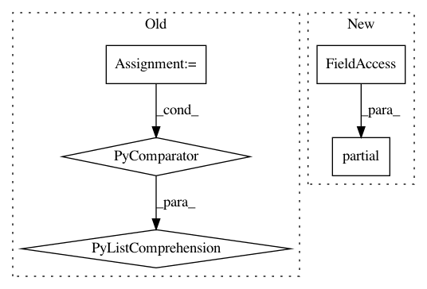

aa40389e623ef5eb29133bf9db68541daabd028e,tests/garage/experiment/test_task_sampler.py,,test_construct_envs_sampler_ml10,#,51
Before Change
from metaworld.envs.mujoco.env_dict import MEDIUM_MODE_ARGS_KWARGS
from metaworld.envs.mujoco.env_dict import MEDIUM_MODE_CLS_DICT
ML10_ARGS = MEDIUM_MODE_ARGS_KWARGS
ML10_ENVS = MEDIUM_MODE_CLS_DICT
ML10_constructors = [
functools.partial(env, *ML10_ARGS["train"][task]["args"],
**ML10_ARGS["train"][task]["kwargs"])
for (task, env) in ML10_ENVS["train"].items()
]
tasks = task_sampler.ConstructEnvsSampler(ML10_constructors)
assert tasks.n_tasks == 10
updates = tasks.sample(15)
envs = [update() for update in updates]
After Change
from metaworld.benchmarks import ML10
train_tasks = ML10.get_train_tasks().all_task_names
ML10_constructors = [
functools.partial(ML10.from_task, train_task)
for train_task in train_tasks
]
tasks = task_sampler.ConstructEnvsSampler(ML10_constructors)
assert tasks.n_tasks == 10
In pattern: SUPERPATTERN
Frequency: 3
Non-data size: 5
Instances
Project Name: rlworkgroup/garage
Commit Name: aa40389e623ef5eb29133bf9db68541daabd028e
Time: 2020-04-20
Author: 38871737+avnishn@users.noreply.github.com
File Name: tests/garage/experiment/test_task_sampler.py
Class Name:
Method Name: test_construct_envs_sampler_ml10
Project Name: Pinafore/qb
Commit Name: 75d90b82e1b25d88bc94add57964df2879d024ad
Time: 2017-05-24
Author: sjtufs@gmail.com
File Name: qanta/util/multiprocess.py
Class Name:
Method Name: _multiprocess
Project Name: dask/dask-image
Commit Name: b7ca885dd1148a94c13e87789d5a5947eaedfc37
Time: 2018-09-30
Author: jakirkham@gmail.com
File Name: dask_image/ndmeasure/__init__.py
Class Name:
Method Name: histogram